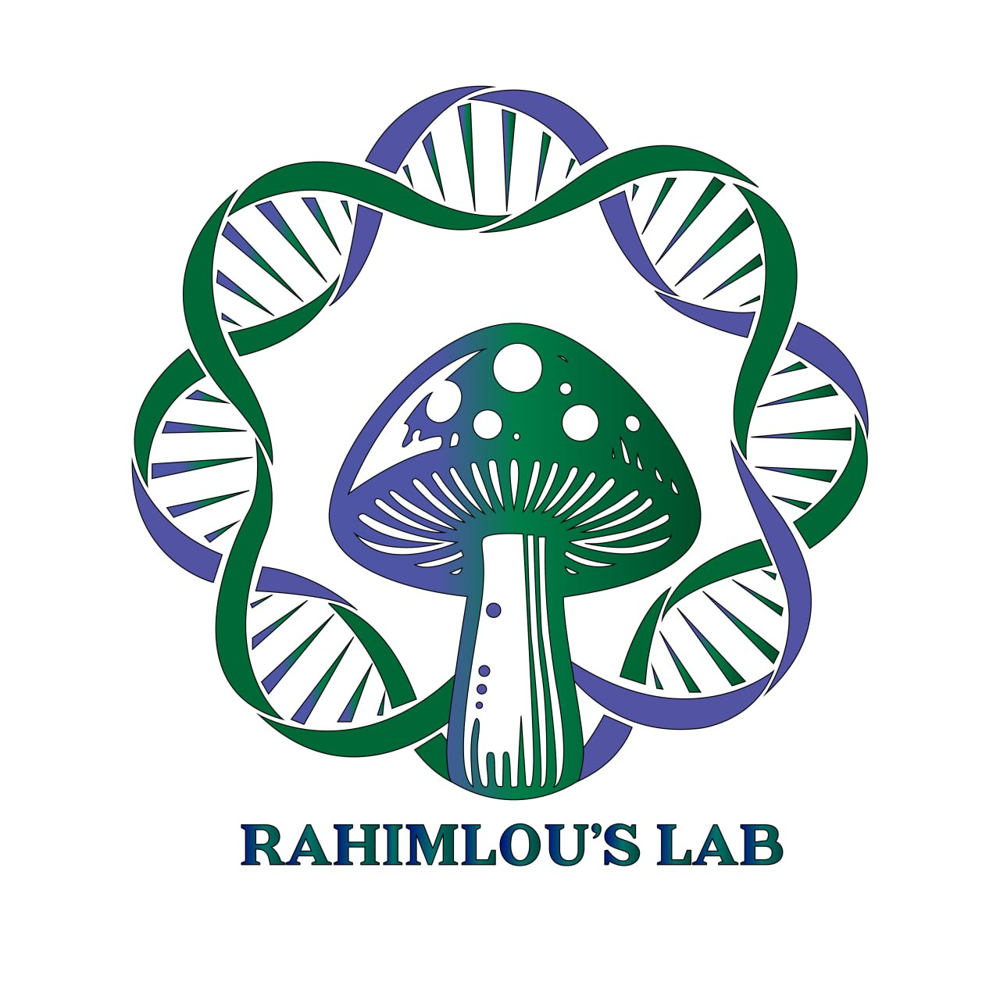

I am a bioinformatics researcher focused on fungal genomics, molecular diagnostics, marker design, comparative genomics, and computational pipeline development.

Comparative genomics and evolutionary analysis of fungi.
Comparative genomics, phylogenomics, and molecular diagnostics of Rhizoctonia and Ceratobasidium species.
Plant-microbe interactions, symbiosis, and nitrogen-fixing root nodulation.
Genome-scale molecular marker and probe development.
Workflow development for genomics and phylogenomics.